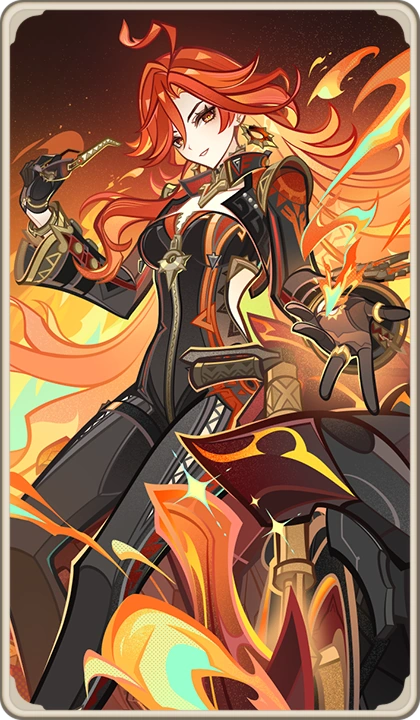

Mavuika, bearer of the Ancient Name “Kiongozi,” stands as the Pyro Archon of Natlan— a leader who embodies both war and unity.
To her people, she is not merely an Archon, but a guiding sun whose flame never fades.
Natlan is structured around tribes, each representing strength, survival, and tradition.
Conflict is not chaos—it is culture. Strength is respected, but unity is survival.
Mavuika governs not by suppressing conflict, but by harmonizing it.
Each tribe in Natlan possesses its own identity, traditions, and warriors.
These tribes compete, cooperate, and coexist under Mavuika’s leadership.
Her role is not to control them—but to ensure they remain united against external threats.
The Sacred Flame is the core of Natlan’s power and spiritual identity.
It represents life, rebirth, and the will to continue.
Mavuika sacrificed herself within this flame 500 years ago, allowing her to be reborn in the present.
This act transformed her into both leader and symbol of eternal resilience.
Natlan is home to Saurians—ancient, powerful creatures deeply tied to elemental forces.
They coexist with humans, forming bonds with warriors and tribes.
Mavuika respects these beings equally, seeing them as part of Natlan’s living strength.
Natlan faces constant Abyss invasions.
Unlike other nations, this threat is direct, violent, and relentless.
Mavuika developed a long-term strategy to completely eradicate the Abyss presence.
Mavuika confronted Capitano, one of the strongest Fatui Harbingers, in a direct battle over control and ideology.
Their conflict represents more than strength—it is a clash of visions for the world.
Even after facing him once, she prepared to fight him again, demonstrating absolute resolve.
Mavuika entered the Night Kingdom with the Traveler, a realm deeply connected to the Abyss.
There, she faced the final stage of Natlan’s crisis, standing against darkness itself.
During the Pilgrimage of the Sacred Flame, Mavuika calls upon every warrior and tribe.
She unites all flames into a single force, driving away darkness and despair.
Her presence alone inspires unwavering faith.
Despite her power, Mavuika is approachable, friendly, and lively.
She drinks, sings, and laughs with her people, yet retains absolute authority when needed.
A single cold gaze reminds others she is still an Archon.
Mavuika believes leadership requires sacrifice.
She willingly gave up her life, her time, and everything she valued to secure Natlan’s future.
“Archonhood is status and authority—but it is not who I am.”
⭐ Rarity: 5★
⚔️ Weapon: Claymore
🔥 Element: Pyro
🧬 Constellation: Sol Invictus
🏷️ Real Name: Haborym
🏛️ Category: Archon / God
🎭 Role: DPS / Nuke / On-field / Off-field
Mavuika specializes in high-impact Pyro damage, capable of sustained combat and devastating burst attacks.
Skill: Flame control and infusion
Burst: Massive Pyro detonation